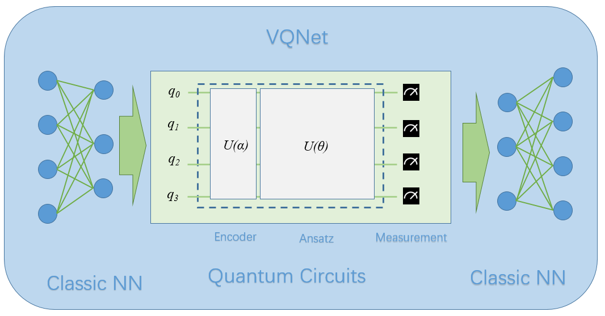
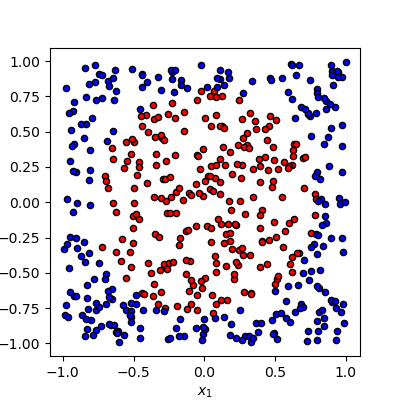
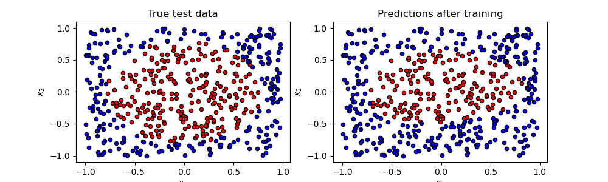

Steps of VQNet Installation¶
VQNet python package Installation¶
We provide precompiled Python packages for installation on Linux, Windows, macOS 13+ (arm64), supporting python3.10, python3.11, or python3.12.
pip install pyvqnet --upgrade
If you encounter the following GLBCXX problem on Linux:
ImportError: /lib/x86_64-linux-gnu/libstdc++.so.6: version `GLIBCXX_3.4.30' not found (required by /home/whc/miniforge3/envs/py310/lib/python3.10/site-packages/pyvqnet/libs/libvqnet.so)
You can update the libstdcxx library, for example:
conda install -c conda-forge "libstdcxx-ng>=12"
For Windows and Linux systems, the pyvqnet package includes built-in acceleration features for classic neural network computations based on Nvidia CUDA, which depends on the specific version of NVIDIA CUDA 11.8 runtime libraries (automatically installed with the package). The package is optimized for the following CUDA architectures: sm_80 (NVIDIA A100, A30 series data center GPUs) and sm_86 (NVIDIA GeForce RTX 30 series consumer GPUs). Please ensure you are using a GPU that supports these architectures; otherwise, the program may not function correctly.
Important
Please note that since this package does not distinguish between CPU/GPU versions, it depends on NVIDIA CUDA runtime libraries under Windows and Linux, which are automatically installed with the package. This may cause conflicts with other software that depends on different versions of CUDA (such as torch based on CUDA 12).
The relevant library versions are:
"nvidia-cublas-cu11==11.11.3.6", "nvidia-cuda-runtime-cu11==11.8.89", "nvidia-nccl-cu11== 2.19.3", "nvidia-cuda-cupti-cu11==11.8.87", "nvidia-cuda-nvrtc-cu11==11.8.89", "nvidia-cufft-cu11==10.9.0.58", "nvidia-cusolver-cu11==11.4.1.48", "nvidia-cusparse-cu11==11.7.5.86", "nvidia-nvtx-cu11==11.8.86", "nvidia-curand-cu11==10.3.0.86",
Validate VQNet’s installation¶
import pyvqnet
from pyvqnet.tensor import *
a = arange(1,25).reshape([2, 3, 4])
print(a)
A simple case of VQNet¶
Here we introduced a case which consisted with classical neural network modules and quantum modules of VQNet to describing the workflow of quantum machine learning. It refers to Data re-uploading for a universal quantum classifier . Generally, there are following parts of quantum computing module in quantum machine learning:
(1)Encoder:encoding classical data into quantum state;
(2)Ansats: training the parameters in Parameterized Quantum Gates;
(3)Measurement: measuring the value of a qubit(projection of qubit’s quantum state in a specified axis).
Quantum computing module is the theoretical basis of the hybrid model of quantum classical neural network, which is also differentiable like the module of classical neural network. VQNet supports quantum computing module and classical computing module to form a hybrid machine learning model, and provides a variety of optimization algorithm optimization parameters. (e.g. Convolution layer, pooling layer, full connection layer, activation function, etc.)

In the quantum computing module, VQNet supports the use of the efficient quantum software computing package pyqpanda3 to build quantum modules. Using the various commonly used interfaces provided by pyqpanda3, users can quickly build quantum computing modules.
The following example uses pyqpanda3 to build a quantum computing module. Through VQNet, this quantum module can be directly embedded into a hybrid machine learning model for quantum circuit parameter training. In this example, 1 qubit is used, multiple parameterized rotation gates RZ, RY, RZ are used to encode the input x, and the probs_measure function is used to observe the probability measurement result of the qubit as output.
import pyqpanda3.core as pq
from pyvqnet.qnn.pq3 import probs_measure
def qdrl_circuit(input,weights):
qlist = range(1)
machine = pq.CPUQVM()
x1 = input.squeeze()
param1 = weights.squeeze()
# Build quantum circuit instance using pyqpanda3 interface
circult = pq.QCircuit()
# Insert RZ gate on the first qubit with parameter x1[0]
circult << pq.RZ(qlist[0], x1[0])
# Insert RY gate on the first qubit with parameter x1[1]
circult << pq.RY(qlist[0], x1[1])
# Insert RZ gate on the first qubit with parameter x1[2]
circult << pq.RZ(qlist[0], x1[2])
# Insert RZ gate on the first qubit with parameter param1[0]
circult << pq.RZ(qlist[0], param1[0])
# Insert RY gate on the first qubit with parameter param1[1]
circult << pq.RY(qlist[0], param1[1])
# Insert RZ gate on the first qubit with parameter param1[2]
circult << pq.RZ(qlist[0], param1[2])
# Insert RZ gate on the first qubit with parameter x1[0]
circult << pq.RZ(qlist[0], x1[0])
# Insert RY gate on the first qubit with parameter x1[1]
circult << pq.RY(qlist[0], x1[1])
# Insert RZ gate on the first qubit with parameter x1[2]
circult << pq.RZ(qlist[0], x1[2])
# Insert RZ gate on the first qubit with parameter param1[3]
circult << pq.RZ(qlist[0], param1[3])
# Insert RY gate on the first qubit with parameter param1[4]
circult << pq.RY(qlist[0], param1[4])
# Insert RZ gate on the first qubit with parameter param1[5]
circult << pq.RZ(qlist[0], param1[5])
# Insert RZ gate on the first qubit with parameter x1[0]
circult << pq.RZ(qlist[0], x1[0])
# Insert RY gate on the first qubit with parameter x1[1]
circult << pq.RY(qlist[0], x1[1])
# Insert RZ gate on the first qubit with parameter x1[2]
circult << pq.RZ(qlist[0], x1[2])
# Insert RZ gate on the first qubit with parameter param1[6]
circult << pq.RZ(qlist[0], param1[6])
# Insert RY gate on the first qubit with parameter param1[7]
circult << pq.RY(qlist[0], param1[7])
# Insert RZ gate on the first qubit with parameter param1[8]
circult << pq.RZ(qlist[0], param1[8])
# Build quantum program
prog = pq.QProg()
prog << circult
# Get probability measurement
prob = probs_measure(machine ,prog, qlist)
return prob
Our task is to classify these data which is generated randomly based on binary classification algorithm. In this task, 0 is a circle’s center, points within radius by 1 colored in red are one category, the samples are labeled in blue are another category.

The pipeline of the training process
# import required libraries and functions
from pyvqnet.qnn.pq3.quantumlayer import QuantumLayer
from pyvqnet.optim import adam
from pyvqnet.nn.loss import CategoricalCrossEntropy
from pyvqnet.tensor import QTensor
import numpy as np
from pyvqnet.nn.module import Module
Defining a model, where __init__ function defines the internal neural network modules and quantum modules, and forward function defines the forward function, QuantumLayer is an abstract class
that encapsulates quantum computing.
VQNet will calculate the parameters’ gradient automatically with qdrl_circuit, param_num.
# number of parameters to be trained.
param_num = 9
# qubit number.
qbit_num = 1
#define a model class inherits from Module.
class Model(Module):
def __init__(self):
super(Model, self).__init__()
#use QuantumLayer to embed quantum circuit into autodiff pipeline.
self.pqc = QuantumLayer(qdrl_circuit,param_num)
#define the forward function
def forward(self, x):
x = self.pqc(x)
return x
Definiting some functions of training model
# a function to generating the raw data randomly
def circle(samples:int, rads = np.sqrt(2/np.pi)) :
data_x, data_y = [], []
for i in range(samples):
x = 2*np.random.rand(2) - 1
y = [0,1]
if np.linalg.norm(x) < rads:
y = [1,0]
data_x.append(x)
data_y.append(y)
return np.array(data_x,dtype=np.float32), np.array(data_y,np.int64)
# a funntion to loading data
def get_minibatch_data(x_data, label, batch_size):
for i in range(0,x_data.shape[0]-batch_size+1,batch_size):
idxs = slice(i, i + batch_size)
yield x_data[idxs], label[idxs]
# a function to computing the accuracy
def get_score(pred, label):
pred, label = np.array(pred.data), np.array(label.data)
pred = np.argmax(pred,axis=1)
score = np.argmax(label,1)
score = np.sum(pred == score)
return score
VQNet follows the general workflow of machine learning: loading the data iteratively, front propagation, calculating loss function, back propagation, updating the parameter.
# instantiating a model
model = Model()
# using Adam to define a optimizer
optimizer = adam.Adam(model.parameters(),lr =0.6)
# using cross-entropy to define a loss function
Closs = CategoricalCrossEntropy()
A function to train the model
def train():
# generate data to be trained randomly
x_train, y_train = circle(500)
x_train = np.hstack((x_train, np.zeros((x_train.shape[0], 1),dtype=np.float32)))
# define the number of data about each batch
batch_size = 32
# Maximum of training iteration times
epoch = 10
print("start training...........")
for i in range(epoch):
model.train()
accuracy = 0
count = 0
loss = 0
for data, label in get_minibatch_data(x_train, y_train,batch_size):
# clear the cache of optimizer
optimizer.zero_grad()
# forward computing
output = model(data)
# calculating loss function
losss = Closs(label, output)
# anti-propagation
losss.backward()
# update the parameter of optimizer
optimizer._step()
# calculate the accuracy
accuracy += get_score(output,label)
loss += losss.item()
count += batch_size
print(f"epoch:{i}, train_accuracy:{accuracy/count}")
print(f"epoch:{i}, train_loss:{loss/count}\n")
A function to validate the model
def test():
batch_size = 1
model.eval()
print("start eval...................")
xtest, y_test = circle(500)
test_accuracy = 0
count = 0
x_test = np.hstack((xtest, np.zeros((xtest.shape[0], 1),dtype=np.float32)))
predicted_test = []
for test_data, test_label in get_minibatch_data(x_test,y_test, batch_size):
test_data, test_label = QTensor(test_data),QTensor(test_label)
output = model(test_data)
test_accuracy += get_score(output, test_label)
count += batch_size
print(f"test_accuracy:{test_accuracy/count}")
Training and testing results
start training...........
epoch:0, train_accuracy:0.6145833333333334
epoch:0, train_loss:0.020432369535168013
epoch:1, train_accuracy:0.6854166666666667
epoch:1, train_loss:0.01872217481335004
epoch:2, train_accuracy:0.8104166666666667
epoch:2, train_loss:0.016634768371780715
epoch:3, train_accuracy:0.7479166666666667
epoch:3, train_loss:0.016975031544764835
epoch:4, train_accuracy:0.7875
epoch:4, train_loss:0.016502128106852372
epoch:5, train_accuracy:0.8083333333333333
epoch:5, train_loss:0.0163204787299037
epoch:6, train_accuracy:0.8083333333333333
epoch:6, train_loss:0.01634311651190122
epoch:7, train_loss:0.016330583145221074
epoch:8, train_accuracy:0.8125
epoch:8, train_loss:0.01629052646458149
epoch:9, train_accuracy:0.8083333333333333
epoch:9, train_loss:0.016270687493185203
start eval...................
test_accuracy:0.826
